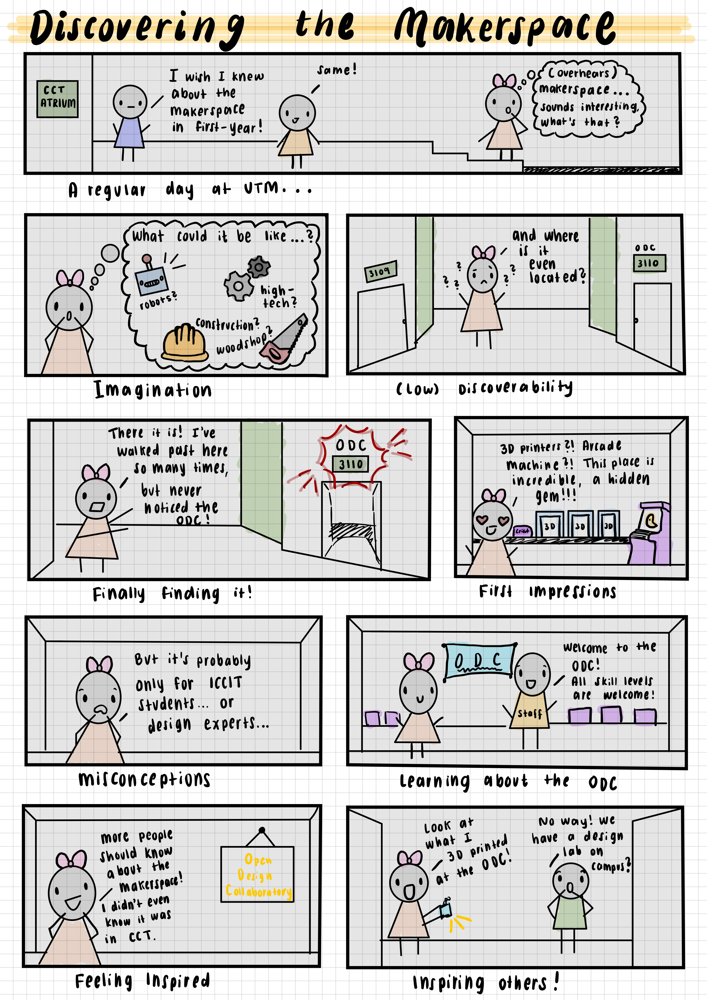
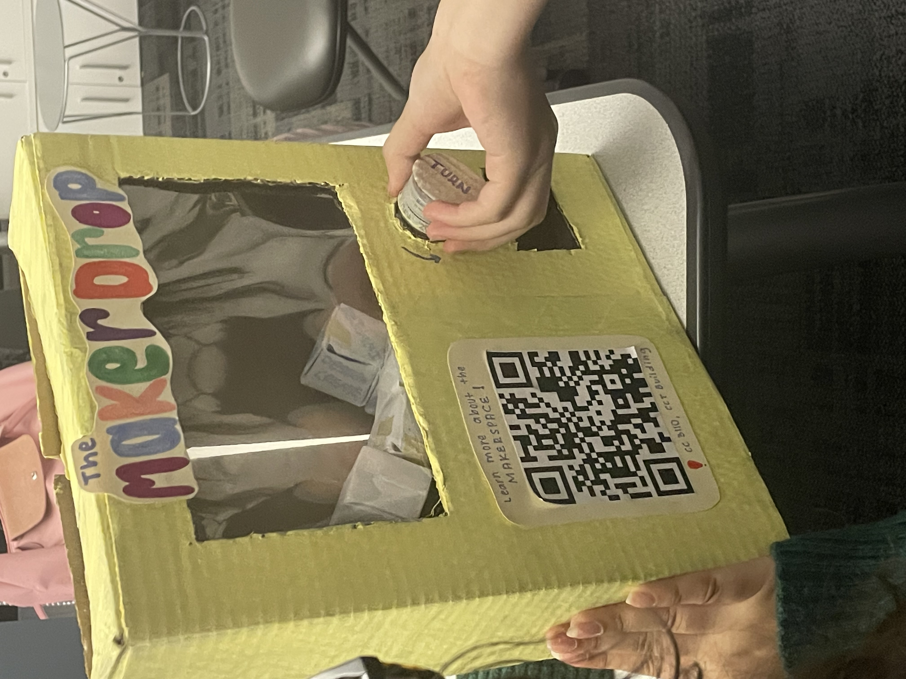
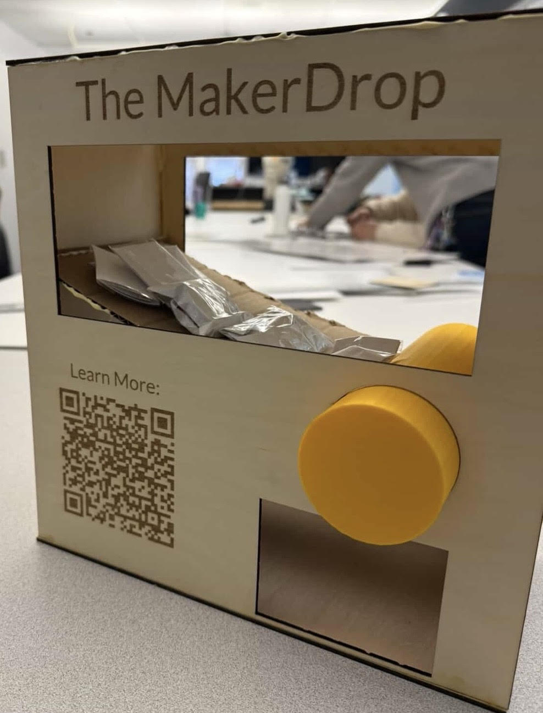

The Challenge
Despite being a well-equipped makerspace that offers creative resources and opportunities for collaboration, the ODC remained largely unknown to students. Many struggled to locate the space or assumed it was only intended for experienced designers or experts. Our goal was to make the makerspace more discoverable, accessible, and welcoming to students! This comic strip illustrates the user journey from uncertainty about the makerspace to interest and curiosity.

User Research & Insights
Through student interviews and a mini-diary study, we investigated students' current awareness and perceptions of the ODC. Our research revealed some key findings:
- Low Awareness: None of the participants had heard about the ODC before the study.
- Wayfinding Issues: Students struggled to locate the makerspace, even within the same building.
- Misconceptions: Many believed the makerspace was only for advanced users.
However, students expressed a strong interest after learning about the space and its resources.
The Solution
We developed The MakerDrop, a vending-machine installation designed for high-traffic campus locations. By turning a knob, students receive small prizes, like 3D-printed keychains and vinyl stickers created using makerspace equipment. A QR code also directs them to a digital gallery and information about the ODC. We constructed a lo-fi cardboard prototype to explore the dispensing mechanism and interaction flow.

User Testing & Iteration
We conducted user-testing using think-aloud observations to analyze how students interacted with the prototype. Participants found the concept engaging, however, testing revealed issues with the knob mechanism and prize dispensing.
Based on this feedback, we refined the final prototype's internal mechanisms and used stronger materials. The final prototype included laser-cut wood panels for the body and a custom 3D-printed knob. It combined playful interaction with digital information to motivate students to discover the makerspace.

This project reinforced my understanding of UX research, showcasing that design is an iterative process. User feedback can really help transform an initial idea into a functional and accessible solution!